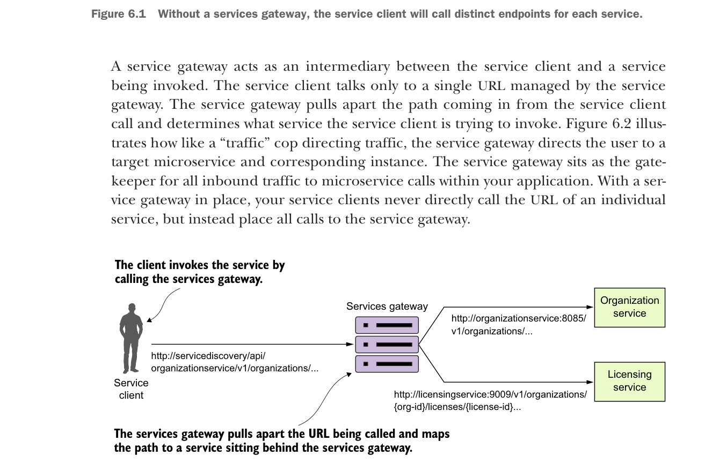
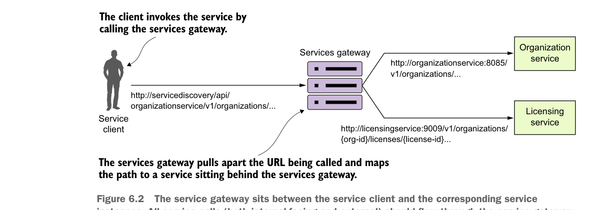

Without a services gateway, the service client will call distinct endpoints for each service.
A service gateway acts as an intermediary between the service client and a service being invoked. The service client talks only to a single URL managed by the service gateway. The service gateway pulls apart the path coming in from the service client call and determines what service the service client is trying to invoke. Figure 6.2 illustrates how like a “traffic” cop directing traffic, the service gateway directs the user to a target microservice and corresponding instance. The service gateway sits as the gatekeeper for all inbound traffic to microservice calls within your application. With a service gateway in place, your service clients never directly call the URL of an individual service, but instead place all calls to the service gateway.

The service gateway sits between the service client and the corresponding service instances. All service calls (both internal-facing and external) should flow through the service gateway.
Because a service gateway sits between all calls from the client to the individual services, it also acts as a central Policy Enforcement Point (PEP) for service calls. The use of a centralized PEP means that cross-cutting service concerns can be implemented in a single place without the individual development teams having to implement these concerns. Examples of cross-cutting concerns that can be implemented in a service gateway include
- Static routing—A service gateway places all service calls behind a single URL and API route. This simplifies development as developers only have to know about one service endpoint for all of their services.